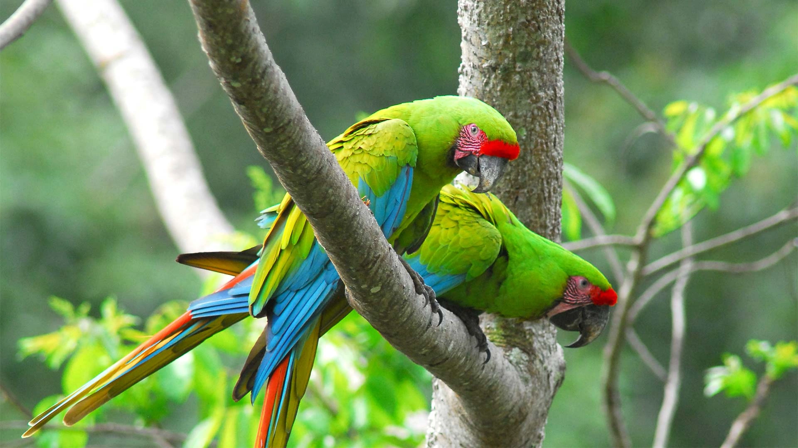
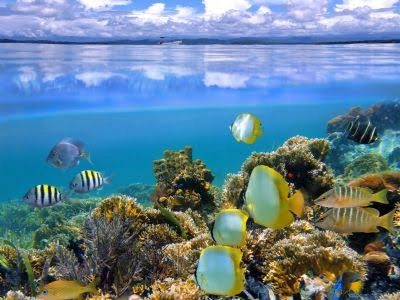
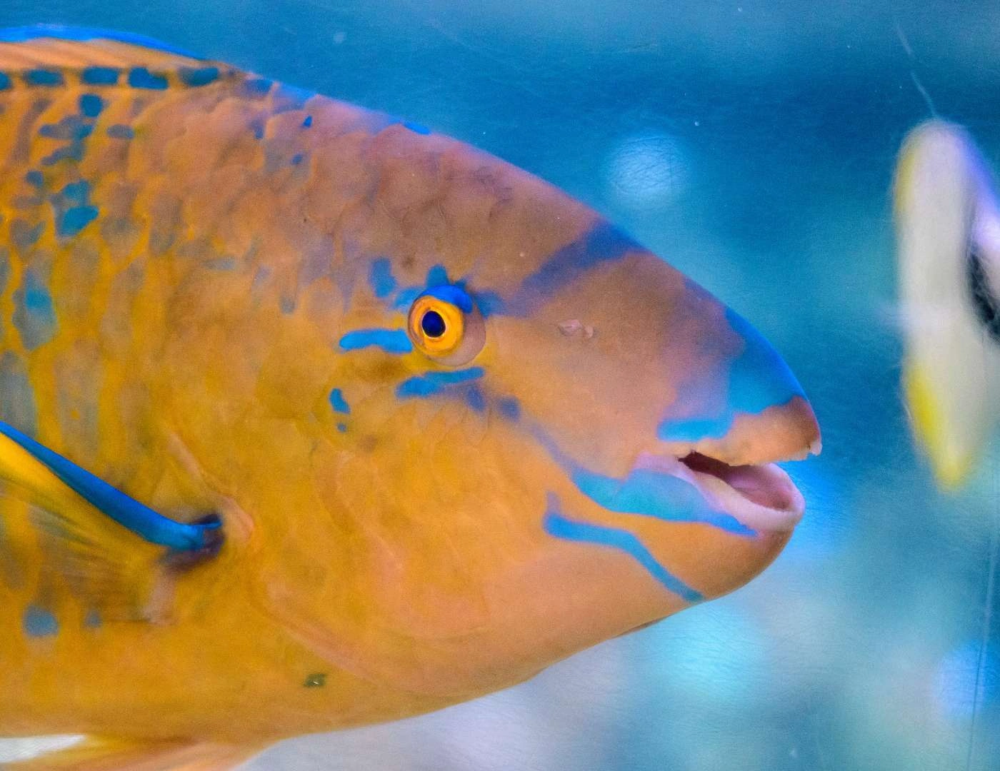
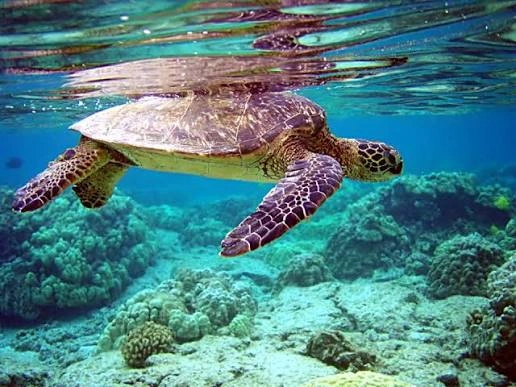

Fauna Terrestre

El bosque húmedo tropical alberga una amplia variedad de mamíferos, reptiles y aves que habitan cerca de las playas.
- Monos Congo (Aulladores): Escuchará sus potentes rugidos a lo largo de las copas de los árboles.
- Monos Carablanca: Muy curiosos y frecuentes cerca de las áreas de descanso.
- Perezosos: De dos y tres dedos, habitan en lo alto de los árboles de embaúba y almendro.
- Mapaches y Coatíes: Frecuentes en la zona costera.
Vida Marina y Coralina
El Parque Nacional Cahuita resguarda el arrecife coralino más importante del Caribe costarricense, con más de 240 hectáreas de extensión.
Especies de Coral

Coral cerebro, cuerno de alce y abanicos de mar.
Peces y Moluscos

Peces loro, pez ángel, langostas, erizos y pulpos.
Tortugas Marinas

Sitio de anidación y alimentación para la tortuga carey y verde.